Qualitative results of AdaPhase (1).

Qualitative results of AdaPhase (2).

Qualitative results of AdaPhase (3).
Abstract
We propose AdaPhase, a training-free stylization method for diffusion models that achieves stylization without compromising content by modulating frequency and leveraging the signal-to-noise ratio (SNR). Text-guided image stylization fundamentally struggles with the trade-off between preserving content structure and generating stylistic attributes, and existing training-based approaches incur high computational costs. Recent training-free frequency-based methods successfully disentangle content and style but often suffer from over-stylization. This results from a lack of analysis regarding the implications of frequency manipulation in latent space and a reliance on heuristic strategies. AdaPhase consists of low-frequency phase refinement derived from DDIM inversion latents to align the denoising trajectory toward the predefined inversion path. To ensure AdaPhase generates stylistic attributes flexibly without compromising the content structure, we introduce adaptive spectral alignment that scales the refinement range through an analytical assessment of the noise power at each timestep. We demonstrate that AdaPhase effectively resolves the content-style trade-off, evidenced by PCA-based projection of latent trajectories and qualitative/quantitative comparisons.
Introduction
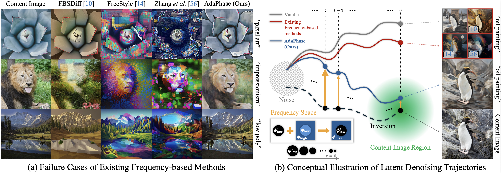
Balancing a content-style trade-off is a key challenge in text-guided image stylization of diffusion models.
To mitigate the limitations of substantial additional training or increased inference latency, recent studies propose training-free stylization methods that manipulate the frequency in latent space, inspired by signal processing theory in pixel space.
Despite their promise, they directly transfer pixel-space intuitions without sufficient analysis of what frequency manipulation implies in latent space.
They also lack a principled justification for how frequency manipulation should vary across denoising timesteps, relying instead on heuristic evaluation.
Consequently, existing frequency-based methods often over-stylize and distort content details.
We introduce AdaPhase, a novel training-free stylization method that achieves stylization while preserving content by leveraging frequency domain properties and the diffusion model's SNR.
- Low-Frequency Phase Refinement. We inject the low-frequency phase of the content image's DDIM inversion latents into the denoising process. This refinement shifts latents toward the predefined inversion path and ensures the preservation of content structure.
- Latent Trajectory Analysis. PCA-based projection of latent trajectories demonstrates that our strategy effectively aligns the latents, particularly at timestep t = 0.
- Adaptive Spectral Alignment. Observing that high noise energy renders structural predictions unreliable, we adaptively reduce the injection range proportional to the noise power of the diffusion process. This enables the generation of stylistic attributes without compromising the content structure.
Method
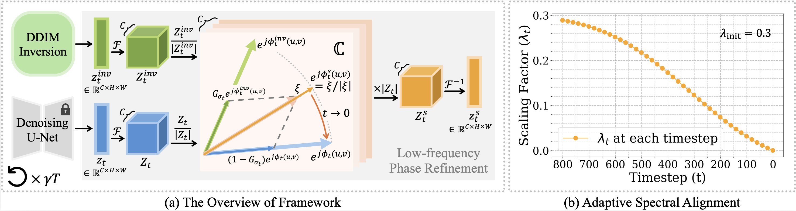
Low-Frequency Phase Refinement
AdaPhase injects the low-frequency phase of DDIM inversion latents into the denoising process to preserve content structure. By blending phase vectors in the complex plane, our method avoids phase-wrapping artifacts while guiding the denoising trajectory toward the predefined inversion path.
Adaptive Spectral Alignment
We adaptively control the frequency range of phase refinement based on the diffusion model's signal-to-noise ratio (SNR). A wider refinement range at early, high-noise timesteps enforces structural consistency, while a narrower range at later timesteps allows greater flexibility in generating stylistic details.
Experiments
PCA-based Trajectory Projection
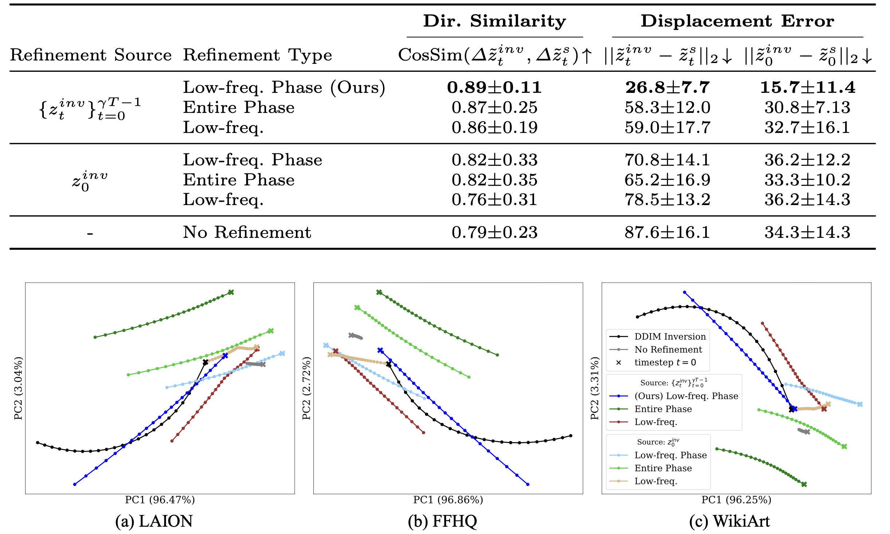
We define a space of the first two principal components based on the inversion path. Since stylization has no definitive ground truth, we project the refined trajectories under empty-text reconstruction onto the inversion path to show close alignment. We evaluate the geometric proximity to the inversion path, as the DDIM inversion path reveals the original image reconstruction path in reverse. The trajectory obtained by refining the low-frequency phase of the inversion latents significantly outperforms other methods.
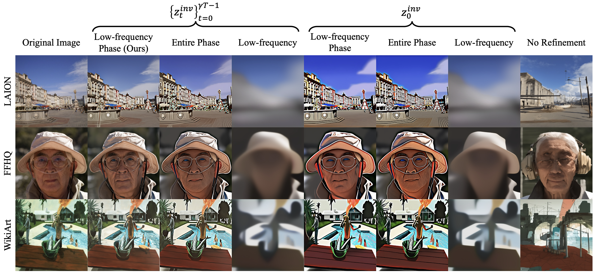
Visualization of images decoded from the latents at t = 0 for the samples shown in the previous graph. While our method closely reconstructs original images, others tend to produce artifacts like overly emphasized contrast or blurring.
Qualitative Comparison
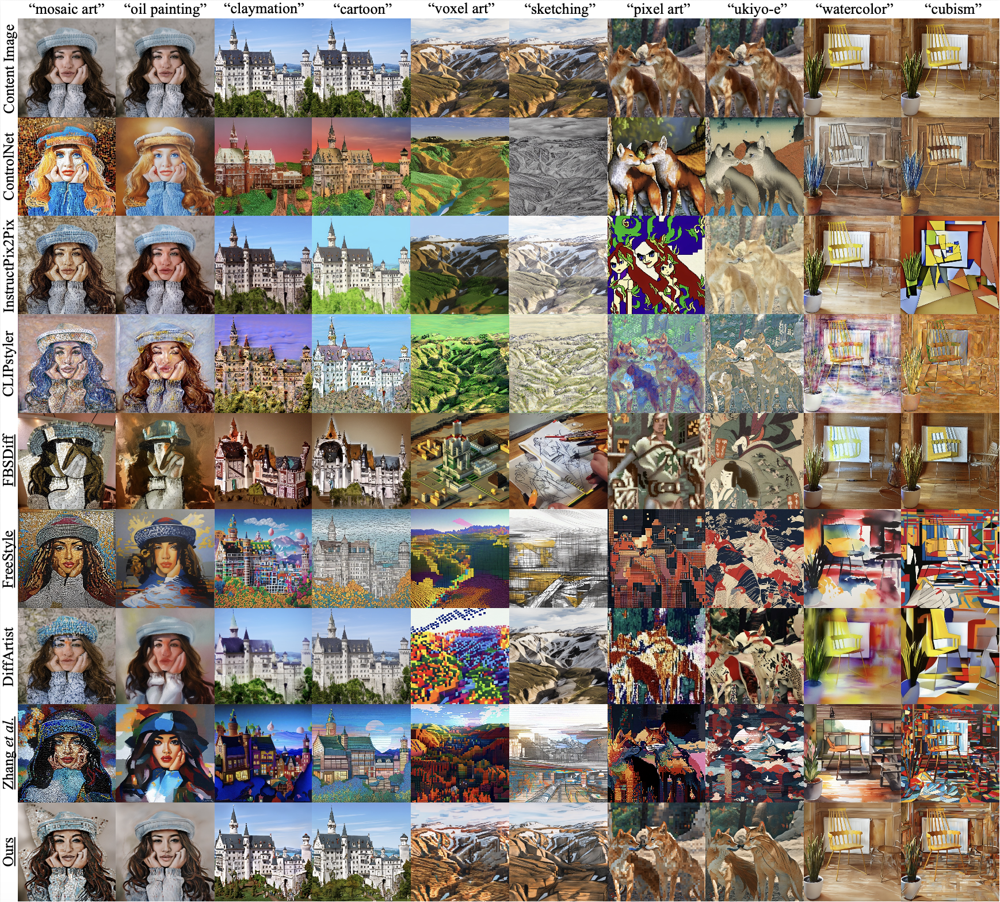
Qualitative comparsion of stylization outcomes with existing methods. Underlined models utilize the frequency domain. Our method achieves superior structural preservation while successfully stylizing all content-style pairs. In contrast, competing methods exhibit a trade-off between content preservation and stylization.
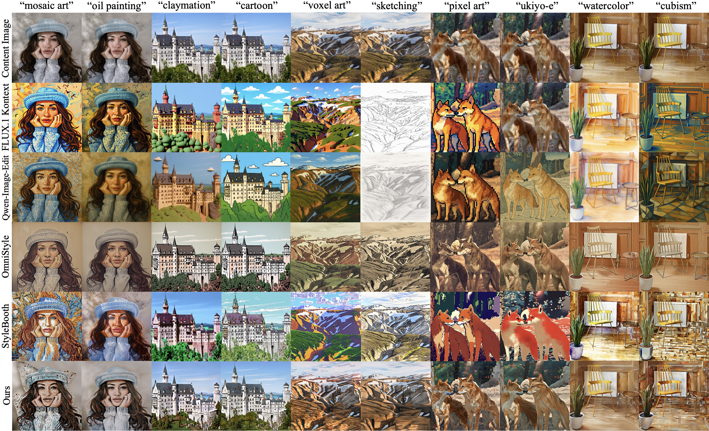
Qualitative comparison of stylization outcomes with recent works. While most methods generate plausible stylized images, our method consistently achieves content-preserving stylization across all images.
Quantitative Comparison
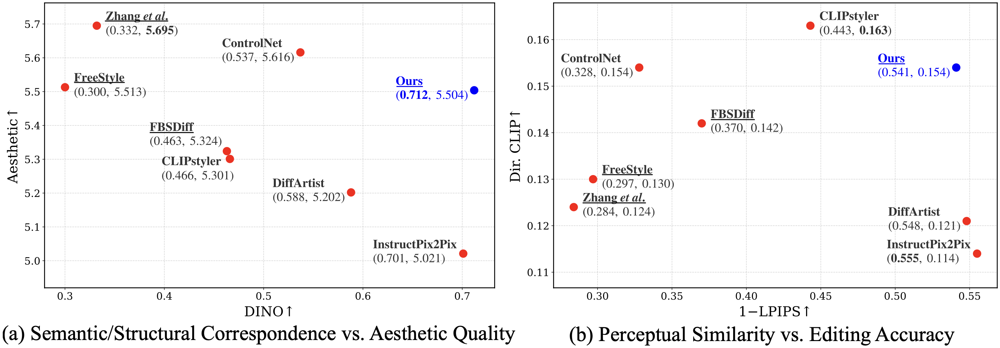
Quantitative comparison with existing methods. Higher DINO scores tend to correlate with lower Aesthetic scores in the baseline methods. In contrast, our method achieves the highest DINO score while maintaining a competitive Aesthetic score. Consequently, our model is positioned in the upper-right corner of the plot, representing an optimal balance between style editing accuracy and content preservation.
Ablation Study
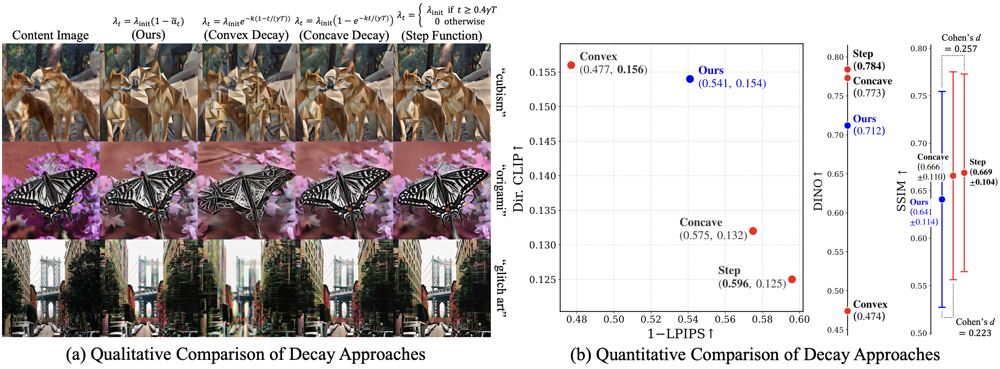
Qualitative ablation study of different decay approaches. Our method shows content-style-balanced images. Convex decay results in structural collapse, while concave decay and the step function lead to weak stylization.
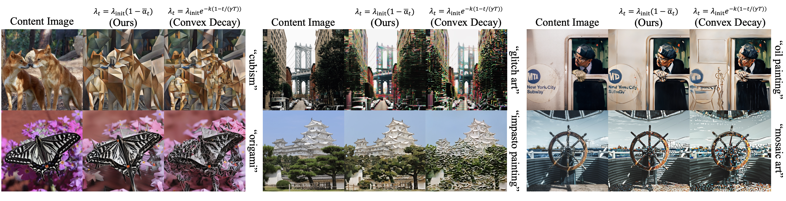
We further equalize the total spectral injection of convex decay with our method to ensure the collapse is not due to insufficient injection. Convex decay fails to preserve content structure even with larger initial injection strength hyperparameter (lambda_init). This implies the injection schedule is critical for content-preserving stylization.
Additional Experiments
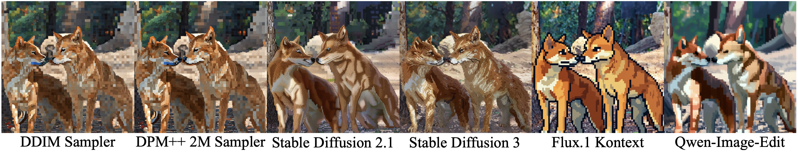
Robustness across different samplers and model backbones. We use the style text “pixel art” for all images. AdaPhase maintains its robustness across sampling methods and model backbones when the underlying generative dynamics can be formulated as deterministic ODEs.
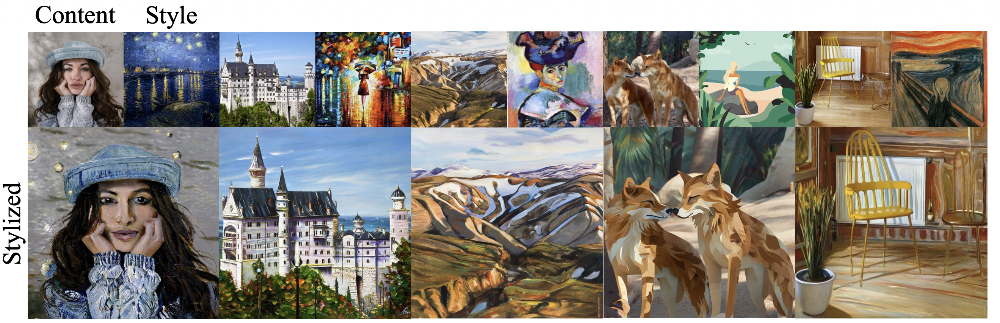
We additionally integrate our method with IP-Adapter and demonstrate its applicability to tasks that take a style image as input. AdaPhase successfully reflects the reference style while achieving content preservation.
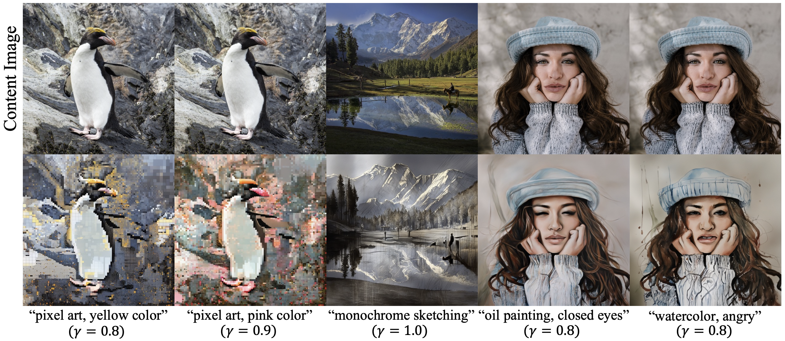
While AdaPhase preserves content structure by injecting the low-frequency phase of the inversion latent, it still allows low-frequency attributes (e.g., object contours and colors) to be stylized.
BibTeX
@inproceedings{lee2027adaphase,
title={AdaPhase: Navigating the Trajectory with Adaptive Frequency Modulation for Content-preserving Stylization},
author={Sekwang Lee and Ilwoo Lyu},
booktitle={Proceedings of the IEEE/CVF Winter Conference on Applications of Computer Vision},
year={2027}
}